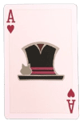
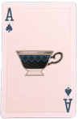
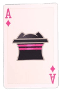
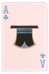
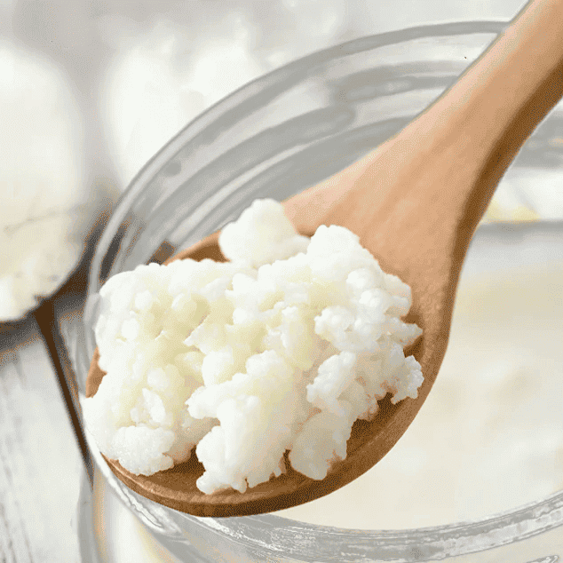

Project

Kefir
Kefir adalah minuman tradisional yang berasal dari Pegunungan Kaukasus, Rusia. Kefir berasal dari kata “keyif” yang memiliki arti kenikmatan atau kepuasan dalam bahasa Turki.

diolah
menjadi
menjadi

Es Krim Kefir Stroberi
Es krim kefir stroberi adalah salah satu bentuk fermented ice cream yang memanfaatkan kefir sebagai pengganti bahan baku utamanya dan disertakan penambahan buah stroberi.